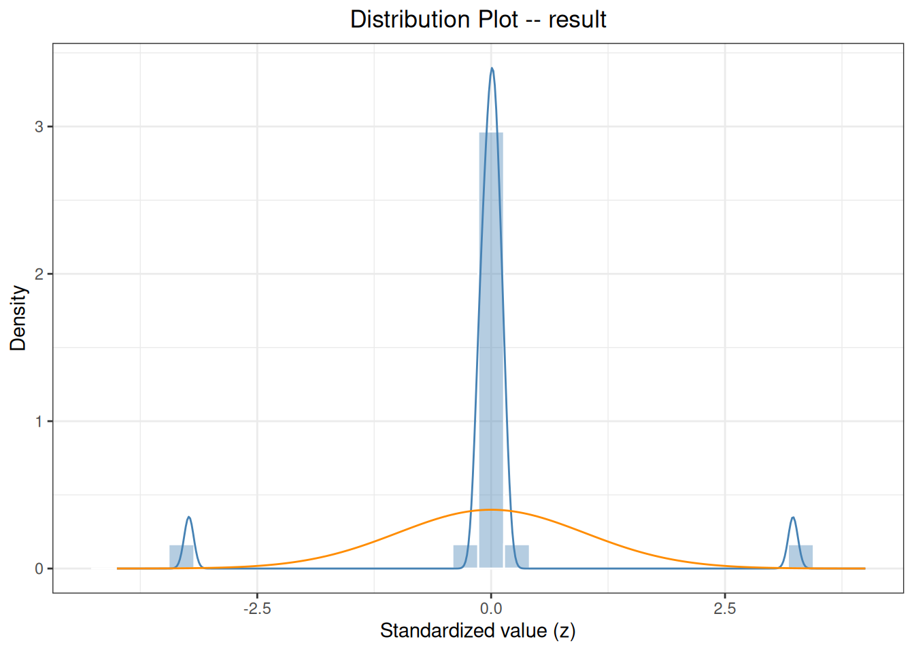

Code
outliers_test(
data, col, method = c("grubbs", "esd", "dixon", "iqr"), ...
)
normal_test(
data, col,
method = c("auto", "shapiro", "sw", "ad", "lillie", "cvm"),
level = 0.95
)Outlier and distribution tests help identify problems in data quality, the experimental process, or model assumptions. They are diagnostic tools before analysis, not automatic tools for deleting data or declaring a product acceptable.
This chapter introduces the independent-data functions outliers_test() and normal_test(), together with outlier() and normal() methods for mcr and precision objects. Always trace conclusions back to the original records and retain sensitivity analyses with and without candidate outliers.
An outlier test produces candidate flags but does not delete observations. The null hypothesis of a normality test concerns a particular distribution, and failure to reject it does not prove normality. Determine the method, significance level, maximum number of outliers, and tail direction before viewing results. Object-level methods may test paired differences or separate sample sequences; the statistical unit must match the study design.
| Function | Main purpose |
|---|---|
outliers_test() |
Apply Grubbs, ESD, Dixon, or IQR to an ordinary data column |
normal_test() |
Apply Shapiro, AD, Lilliefors, or CvM to an ordinary data column |
outlier() |
Mark candidate outliers in an mcr or precision object |
normal() |
Perform normality diagnostics for a precision object |
plot() |
Plot diagnostic figures for test or analysis objects |
outliers_test(
data, col, method = c("grubbs", "esd", "dixon", "iqr"), ...
)
normal_test(
data, col,
method = c("auto", "shapiro", "sw", "ad", "lillie", "cvm"),
level = 0.95
)| Method | Core definition | Main boundary |
|---|---|---|
| Grubbs | \(G=\max|x_i-\bar x|/s\) | At most one point per test; alpha controls the test |
| Generalized ESD | Sequentially remove the largest standardized deviation and compare each \(R_i\) with its critical value | r is the maximum candidate count, default min(5,n-2) |
| Dixon | Endpoint spacing divided by the range, \(Q\) | Only \(3\le n\le30\); alpha only 0.01 or 0.05 |
| IQR | Below \(Q_1-kIQR\) or above \(Q_3+kIQR\) | Descriptive rule; default coef is 1.5 |
Missing and nonfinite values are ignored, but indices reports one-based positions in the original vector. Grubbs, ESD, and Dixon rely on assumptions such as independence and approximate normality; IQR makes no normality assumption but is not a probability-significance test.
The deterministic mapping used by normal_test(method="auto") is:
| Finite sample size | Actual method |
|---|---|
| \(n<3\) | No test |
| \(3\le n\le50\) | Shapiro–Wilk |
| \(51\le n\le5000\) | Anderson–Darling |
| \(n>5000\) | Lilliefors |
The significance level is \(α=1-\texttt{level}\). Q-Q plots and histograms from plot() help identify skewness, heavy tails, and mixtures. P values vary strongly with sample size and must be interpreted together with the plots and data-generating process.
outliers_test() returns the method, statistic, P value, candidate outliers, and indices. normal_test() returns the actual method, statistic, P value, and sample size.
When an ordinary data frame contains multiple analytes, levels, or lots, outliers_test() and normal_test() do not group automatically. Use split_by_factors(data, variable="analyte") first, then apply the same prespecified test with lapply() to each subset. Report each group separately; do not combine all groups and test them as one sample.
outlier(mcr, type="difference") tests paired differences, whereas type="candidate" or "reference" tests one method’s results; percent differences also depend on the denominator. outlier(precision) and normal(precision) process results according to groups defined by by and do not automatically reconstruct independent residuals by day or run. Object-level diagnostics are saved in object slots, so reassign the object after each call.
Object-level outlier() and normal() return updated objects with diagnostic slots; plot() returns a ggplot object.
library(ivdtools)Construct teaching data containing extreme observations. In a formal project, save the raw data and data dictionary before any exclusion or transformation.
diagnostic_data <- data.frame(
sample_id = seq_len(22),
result = c(99.8, 100.4, 99.7, 100.1, 100.0, 99.9,
100.3, 100.2, 99.6, 100.1, 100.0, 99.8,
100.2, 99.9, 100.1, 100.0, 99.7, 100.3,
100.1, 99.9, 108.0, 92.0)
)
grubbs_result <- outliers_test(diagnostic_data, "result", method = "grubbs")
iqr_result <- outliers_test(diagnostic_data, "result", method = "iqr")
normality_result <- normal_test(diagnostic_data, "result", method = "shapiro")
grubbs_resultGrubbs Outliers Test
Data: diagnostic_data
Column: result (n = 22, missing = 0)
Parameters: alpha = 0.05
Outliers: 1
Index Value G stat Critical
-------------------------------------------
22 92.0000 3.2308 2.7577iqr_resultIQR Outliers Test
Data: diagnostic_data
Column: result (n = 22, missing = 0)
Parameters: coef = 1.5
Outliers: 2
Index Value
---------------------
21 108.0000
22 92.0000
fences: [99.3000, 100.7000]normality_result
Normality Test
Data: diagnostic_data
Column: result (n = 22, missing = 0)
Method: Shapiro-Wilk
W = 0.5059, p = 0.0000outliers_test() returns candidate outlier row numbers and values; normal_test() returns the method used, statistic, and P value. A P value alone cannot decide whether to delete an observation, especially for very large or very small samples; use plots, experimental records, and the study objective.
plot(normality_result, type = c("qq", "his"))

Make clear whether the abnormal quantity is the candidate method, the reference method, or the paired difference. First create an mcr object and then specify the detection type:
mcr_data <- data.frame(
id = 1:12,
candidate = c(10.1, 11.2, 12.0, 13.1, 14.0, 15.2,
16.1, 17.0, 18.2, 19.0, 20.1, 28.0),
reference = c(10.0, 11.0, 12.1, 13.0, 14.1, 15.0,
16.0, 17.1, 18.0, 19.1, 20.0, 21.0)
)
mcr_result <- mcr(
mcr_data, id = "id", candidate = "candidate", reference = "reference"
)
mcr_result <- outlier(mcr_result, method = "grubbs", type = "difference")
Outlier
Method: grubbs
Data: Difference (candidate - reference)
Alpha: 0.05
1 outlier(s) found:
Row Value Statistic Critical
--------------------------------------------------
12 7.0000 3.1694 2.4116After detecting a candidate outlier, review sample identity, run order, reagent lot, instrument alarms, and the original trace. Exclusion requires a traceable technical reason, and key results with and without the observation should both be reported.
Diagnostics for a precision design should preserve the experimental hierarchy; replicate results from one run must not be treated as independent patient samples.
precision_data <- data.frame(
sample = rep("level_1", 20),
day = factor(rep(1:5, each = 4)),
run = factor(rep(rep(1:2, each = 2), 5)),
result = c(99.8, 100.1, 100.0, 99.9, 100.2, 100.0, 100.1, 99.8,
99.7, 100.0, 99.9, 100.1, 100.3, 100.1, 100.0, 100.2,
99.8, 100.0, 100.1, 100.0)
)
precision_result <- precision(precision_data, result ~ day/run, by = "sample")
precision_result <- outlier(precision_result, method = "grubbs")Outlier detection -- Grubbs (alpha = 0.05)
No outliers detected.precision_result <- normal(precision_result, method = "shapiro")Normality test -- Shapiro-Wilk
Sample n Method Statistic p-value
---------------------------------------------------------------------------
level_1 20 Shapiro-Wilk W=0.9550 0.4497The standard uses 18.85, 20.38, 21.97, and 22.32 ng/mL to demonstrate Grubbs and two-sided Dixon tests, with no outlier in either test. These two entry points correspond directly to outliers_test().
yyt1789_4_outlier <- data.frame(
sample = 1:4,
result = c(18.85, 20.38, 21.97, 22.32)
)
yyt1789_4_grubbs <- ivdtools::outliers_test(
yyt1789_4_outlier, "result", method = "grubbs", alpha = 0.05
)
yyt1789_4_grubbsGrubbs Outliers Test
Data: yyt1789_4_outlier
Column: result (n = 4, missing = 0)
Parameters: alpha = 0.05
Outliers: 0
No outliers detected.yyt1789_4_dixon <- ivdtools::outliers_test(
yyt1789_4_outlier, "result", method = "dixon", alpha = 0.05,
type = "both"
)
yyt1789_4_dixonDixon Q Outliers Test
Data: yyt1789_4_outlier
Column: result (n = 4, missing = 0)
Parameters: alpha = 0.05, type = both
Outliers: 0
No outliers detected.Both package functions report zero outliers, consistent with the standard. The standard displays Grubbs statistics of 1.2727 at the low end and 0.9028 at the high end, and Dixon statistics of 0.441 at the low end and 0.101 at the high end. The current print method reports only outlier positions and conclusions, not these intermediate statistics; “conclusions agree” must not be written as “all intermediate values were reproduced.”